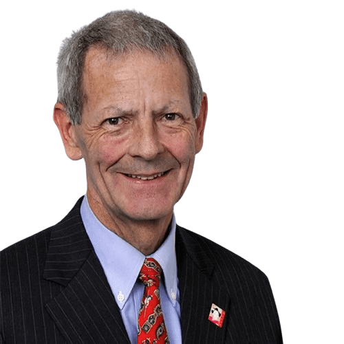
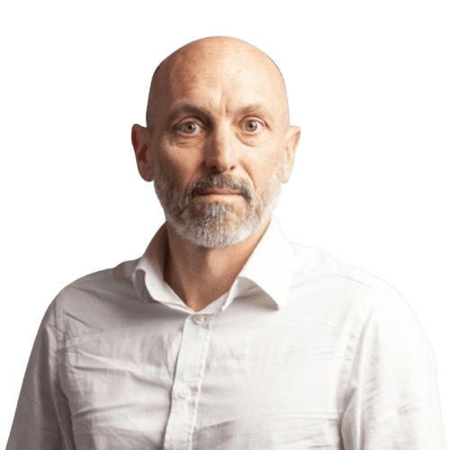
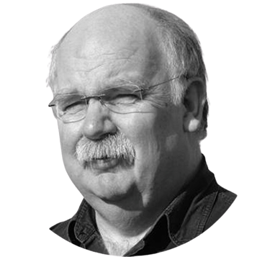

PROGRAMA DE PONENTES

Walter R. Stahel
Fundador y Director del Product-Life Institute

Jocelyn Blériot
Director Ejecutivo de Instituciones Internacionales y Relaciones Gubernamentales en la Fundación Ellen MacArthur
Leyla Acaroglu
Fundadora de Disrupt Design y The UnSchool

Ken Webster
Profesor Visitante en la Universidad de Cranfield y ex Director de Innovación en la Fundación Ellen MacArthur
Michael Braungart
Cofundador del concepto Cradle to Cradle y Director de EPEA
Virginijus Sinkevičius
Comisario Europeo de Medio Ambiente, Océanos y Pesca